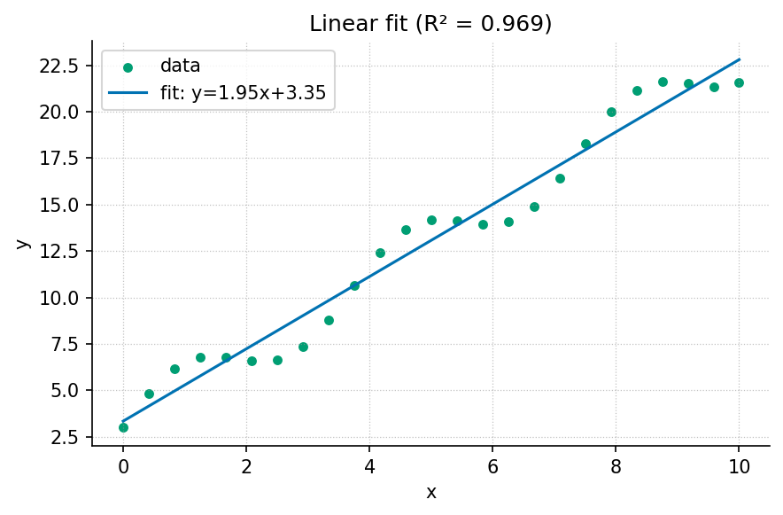

5 Core Methods and Tools

Guided study · Prerequisites: basic arithmetic and the preceding unit’s vocabulary
5.0.1 Study Blueprint
- Big idea: A reproducible method separates input custody, transformation, evaluation and communication.
- Core concepts: model, parameter, observable, variable.
- Quantitative lens: eq. 2.
- Data skill: Record transformations and run an exact arithmetic control before analyzing unfamiliar data.
- Common misconception to repair: Re-running a command successfully does not establish that its scientific input or interpretation is correct.
- Primary lab: sec. 20.
- Question bank: sec. 32.
- Bridge to computation:
textbook.models.linear_fit.
5.1 Learning Objectives
- Trace an output back to its data and transformation.
- Use an exact synthetic case to verify a fitted-line implementation.
- Design a negative control that can fail for a concrete reason.
Opening example. Two classmates calculate a calibration line from the same spreadsheet and obtain different slopes. One silently removes a row; the other changes a unit. Their mathematics may be sound, but their methods are different. A useful workflow exposes both choices before either result appears in a figure.
5.2 Make the transformation explicit
Treat a method as a sequence of declared transformations, each with an input and an output. Reading a file, deciding which rows are eligible, converting units and fitting a model are different transformations. Their order matters: averaging before a nonlinear transformation need not give the same result as transforming before averaging. A workflow diagram is useful only when its arrows correspond to actual operations. Preserve the source file and express changes in code or an inspectable table instead of editing an unexplained copy.
5.3 Design a control with a known answer
The exact four-point line in the worked example checks slope, intercept and predicted values. It is intentionally easier than a research dataset, because its role is to expose mistakes in computation. A second control should violate an assumption: input arrays with different lengths must be rejected by the tested fitting helper. A third control can use observations off the line and confirm that residuals are not all zero. These cases check different boundaries; many copies of the exact line would increase a test count without increasing the range of failures examined.
5.4 Distinguish verification from evaluation
Verification asks whether the implementation behaves as its contract says. Evaluation asks whether the resulting model is useful for the stated question. The exact line provides verification evidence. A held-out calibration setting, an independently collected observation or a residual pattern can provide evaluation evidence. A perfect result on data used to construct the example is not an independent evaluation. Name each kind of evidence so that a green test report is not mistaken for proof that a model describes the world.
5.5 Keep one method in one place
The computational backbone puts fitting in
textbook.models.linear_fit. Chapters, labs and figure
scripts call it rather than each maintaining another copy of the
formula. This reduces opportunities for two implementations to drift.
The independent numeric assertions in the example still have a separate
role: a single implementation needs an external expectation. Modular
scientific software and executable checks are discussed by Wilson and
colleagues (Wilson et al. 2014); this book
demonstrates those practices with small real computations instead of
simulated test doubles.
5.6 Publish an inspectable method record
Record the original data identity, the transformation choices, software environment, parameters and command. Also record what failed or remained unverified. Sandve and colleagues give a primary account of computational reproducibility practices (Sandve et al. 2013). A complete record enables another person to repeat the procedure, but repeatability still does not validate an unreliable sensor or an inappropriate study design. Include the observation protocol and the model’s scope so that a precise execution record supports, rather than obscures, scientific judgment.
5.7 A Worked Formalism
\[\widehat y(x)=mx+b,\qquad (m,b)=\arg\min_{a,c}\sum_i(y_i-ax_i-c)^2\qquad{(2)}\]
| Symbol | Meaning | Units |
|---|---|---|
| \(x_i,y_i\) | Paired observed inputs and outputs | declared data units |
| \(m\) | Least-squares slope | output per input |
| \(b\) | Intercept | output |
| \(\widehat y\) | Fitted output | output |
The four deliberately constructed pairs lie on \(y=2x+1\). The slope is two output units per input unit, the intercept is one output unit and every residual is zero, so the reported coefficient of determination is one. The exact fit is an arithmetic control for the implementation; it supplies no evidence about an unobserved real-world mechanism.
import numpy as np
from textbook.models import linear_fit
x = np.array([0.0, 1.0, 2.0, 3.0])
y = np.array([1.0, 3.0, 5.0, 7.0])
fit = linear_fit(x, y)
assert np.isclose(fit.slope, 2.0)
assert np.isclose(fit.intercept, 1.0)
assert np.allclose(fit.predict(x), y)
print(fit)The equation is evaluated by the tested
textbook.models.linear_fit. The assertions above are
independent expectations for this designed example; the displayed figure
in fig. 2 is a deterministic
illustration with its own explicitly stated inputs, not evidence
collected from the opening scenario.
5.8 Assumptions and Limits
Least squares here treats the input values as known and fits one straight line with equal observation weights. It does not model error in the inputs, dependence between observations or a changing variance. A large coefficient of determination is a statement about these fitted observations. Generalization requires additional data and an evaluation design appropriate to the question.
flowchart LR
Q[Question and observation rule] --> I[Declared inputs and units]
I --> M[Tested model]
M --> P[Predicted quantities]
P --> C[Independent comparison]
C -->|record a revision| QThis diagram records the direction of a modeling workflow. An arrow names a relationship to specify; it does not add an unimplemented physical mechanism. Keep the original prediction when making the recorded revision.
5.9 Summary
A reproducible method separates input custody, transformation, evaluation and communication. The worked example makes a narrow quantitative claim that can be checked with exact inputs and a tested function. Re-running a command successfully does not establish that its scientific input or interpretation is correct. State the assumptions, preserve the observation record and choose a comparison that can distinguish an arithmetic error from an inadequate model. Those habits make a result inspectable without expanding what its evidence establishes.
5.10 Key Terms
model, parameter, observable, variable.
5.11 Further Reading
Wilson and colleagues (Wilson et al. 2014) address scientific software practices; Sandve and colleagues (Sandve et al. 2013) focus on preserving how results were produced.